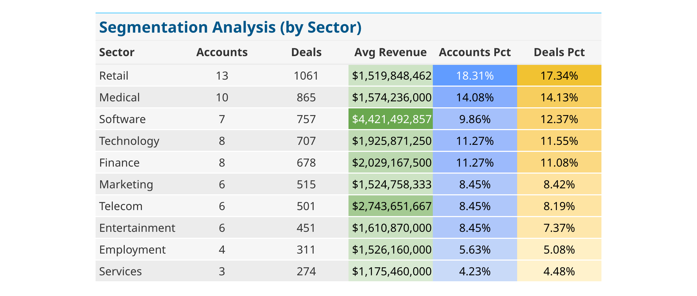

# Insert Skimr Summary Image HereIntroduction
What is a CRM Data?
Customer Relationship Management (CRM) data serves as the backbone of effective sales and marketing strategies in today’s competitive business environment. By systematically capturing and organizing detailed information about customers, prospects, and sales interactions, CRM systems offer businesses invaluable insights into consumer behavior, preferences, and purchasing patterns.
The strategic utilization of CRM data allows companies to enhance customer engagement through personalized marketing campaigns. By analyzing data points such as purchase history, communication preferences, and feedback, businesses can tailor their messages and offers to meet the unique needs of each customer, thereby increasing the relevance and impact of their marketing efforts.
Moreover, CRM data is critical for optimizing sales strategies. Sales teams can use this data to identify high-value prospects, track the progress of ongoing deals, and streamline the sales process. By understanding which strategies lead to successful conversions, companies can refine their sales tactics to focus on the most effective approaches, ultimately increasing efficiency and maximizing sales outcomes.
In essence, CRM data not only helps in building stronger relationships with customers by providing personalized experiences but also empowers sales and marketing teams with the data-driven insights needed to make informed decisions. This strategic advantage is essential for sustaining growth and maintaining competitiveness in any industry.
The Scenario
A B2B company that sells computer hardware has been collecting sales pipeline data for sometime. However due to lack of data expertise, they have not been able to extract valuable insights from the data. You are a new data consultant hired to analyze the CRM data and provide actionable recommendations to improve sales. The task at hand is to sift through extensive data in the CRM system, identify patterns, segment customers, and provide insights on past sales performance and recommendations for future sales strategies.
The data for this project comes from Maven Analytics. The next section will provide an overview of the data.
Data Overview
The CRM database contains the following tables:
- Accounts: Contains information about the companies that have purchased products from the company.
- Products: Contains information about the products sold by the company.
- Sales Team: Contains information about the sales team members.
- Sales Pipeline: Contains information about the sales opportunities and deals in the pipeline.
Note that this analysis will focus on the CRM data for the United States, as all other countries in the dataset have only 1 account (customer) each.
When merged together, we get a better picture of the dataset. The following columns are added to the merged dataset:
Engage Month: The month in which the account was last engaged with.
Close Month: The month in which the deal was closed.
Employee_Size: The size of the company in terms of number of employees.
Time to Close: The number of days from
engage_datetoclose_date.Time to Close Bin: A categorical variable that bins the
time_to_closeinto 4 categories:0-30 days,31-60 days,61-90 days,>90 days.
The image below is a summary of the dataset after adding the new columns and filtering for the United States.
Customer Segmentation
In the initial phase of CRM data analysis, selecting the right features for customer segmentation is crucial as it lays the foundation for tailored marketing strategies and enhanced sales targeting. For this dataset, Sector, Regional Office, and Employee Size make sense to use as segmentation features for the following reasons -
Segmenting customers by Sector allows the company to understand industry-specific needs and tailor products accordingly.
Segmenting customers by Regional Office helps in recognizing geographical trends and local market dynamics, which can significantly influence sales strategies and product offerings.
Segmenting by Employee Size provides insights into the organizational scale of potential clients, enabling the company to customize its approach based on the size and capabilities of each customer.
By focusing on these features, we can effectively group similar accounts, paving the way for more focused and strategic decision-making that aligns with the unique characteristics and needs of each segment.
Customer Segmentation Analysis
The following visualizations provide insights into the distribution of accounts, deals and revenue across different sectors, regional offices, and employee size categories.

We can see that accounts in the Retail sector make up the highest proportion of accounts and deals in our CRM data. Retail accounts also have revenues of about $1.5B on average. Accounts in the Software sector however have the highest revenue on average at about $5.6B. These Software accounts make up roughly 10% of total accounts and 12% of deals. Retail, Medical and Software sector together account for about 44% of total deals. These accounts would surely take priority in sales and marketing strategies.
# Insert Accounts, Deals & Revenue by Employee Size HereLooking at employee size. We’ll notice that our computer hardware products are mostly geared towards large companies. Almost half (50%) of total accounts and deals come from companies with 0 - 1000, and 2051 - 5000 employees. Given the high revenue from 10000 + employee companies, we can deduce that these companies are more likely to be Software companies.
# Insert Accounts, Deals & Revenue by Regional Office HereLooking at regional offices. The number of accounts and deals are almost evenly distributed. The East office however generates a lower percentage of deals (28.20%) compared with the Central office at 36.11% and the West office at 35.69%. Just like other segments, we can deduce that the East and West office locations probably cater to more accounts in the Software sector than the Central office.
Key Metrics
In the analysis of CRM data, several key metrics stand out as essential for evaluating the effectiveness and efficiency of the sales pipeline. Understanding these metrics aid in optimizing sales processes and targeting efforts. Here’s an overview of the critical metrics that will be the focus of our analysis:
Given the data available in our CRM, what metrics would be most relevant to track and analyze to improve sales performance? We need metrics that offer clear insights into our sales process and help identify areas for improvement. Here are some key metrics that would be relevant for our analysis -
Deal Close Rate: This metric shows the percentage of deals that successfully close compared to the total deals initiated. It’s a direct indicator of how effectively our sales team converts opportunities into sales, and tracking this can highlight where we might need to improve our sales tactics or training.
Average Deal Value: Sometimes called ASP (Average Selling Price). Understanding the average revenue from each closed deal helps us gauge the economic impact of our sales efforts. This metric is essential for planning and forecasting, as it tells us how much revenue we can expect on average from each transaction.
Average Deal Event Value: By measuring the revenue generated from specific sales events or campaigns, we can identify which activities are most effective at driving sales. The deal event value is calculated by multiplying the Average Deal Value by the Deal Close Rate.
Average Time to Close: This metric measures the average number of days it takes to close a deal from the time it was initiated. A shorter time to close indicates a more efficient sales process, while a longer time might suggest bottlenecks or inefficiencies that need to be addressed. Longer time to close may also just be a result of high value deals that require more time to finalize due to complexity.
Analysis of Key Metrics
Average Time to Close
The “Average Time to Close” metric is an indicator of the efficiency of the sales process across different segments of the company. This metric measures the average number of days it takes to close a deal from the initial contact. Analysis shows variability in closure times across regional offices, employee sizes, and sectors. For instance, the East regional office reports an average time of 47.1 days, slightly quicker than the Central and West offices, which average 48.6 and 48.7 days, respectively. Similarly, larger companies with over 10,000 employees tend to close deals faster, averaging 46.5 days, compared to smaller companies, which can take up to 49.7 days for those with 7501 to 10,000 employees. In sector-wise analysis, technology firms close deals the quickest, averaging 45.7 days, whereas software companies show a longer average closure time at 49.7 days. Understanding these variations helps pinpoint areas where the sales process can be optimized and indicates how different factors such as regional dynamics, company size, and industry type influence sales efficiency.
Typically in industry, companies use different time frames to measure the time to close, such as month 0 (initial contact and deal close within the same calender month), 0 - 30 days, 0 - 60 days, 0 - 90 days, etc. What you’ll normally find is that while the volume of closed deals will higher for larger time frames like 0 - 90 days, the overall trends and seasonality will be the same across all time frames.
For this analysis, we can also look at various time frames (from initial contact to deal close) to see if there are any trends or patterns that can be identified. We have seen that the overall average time to close in days is 48 days and the median is 45 days.
The charts below show the distribution of time to close in days across different time frames.
# Insert Time to Close Distribution by Sector HereA few observations -
The majority of deals (about 46%) close within 0 - 30 days, and 61 - 90 days (about 23%). fewer deals close within 31 - 60 days. This supports the data we saw earlier that the average time to close is 48 days.
Technology sector has the highest number of deals that close within 0 - 30 days at 50%, while employment sector has the lowest at 45%.
Telecommunications sector has the highest proportion of deals that take 90 days or more to close at 22%, while the Marketing sector has the lowest at 19%.
When looked at by employee size, companies with 10000 + employees have the highest proportion of deals that close within 0 - 30 days at 50%. When looked at by regional office, the East office has the highest proportion of deals that close within 0 - 30 days at 49%. You can see those charts here and here.
Deal Close Rate & Average Deal Value
Let’s analyze these other metrics together as they are all related, once again focusing on our key segments - sector, employee size and regional office. The tables below show the deal close rate and average deal value for each segment, sorted in descending order by deal event value. We’ll use the overall company metrics as a benchmark
# Insert Metrics Table by Sector HereBy sector, we can make a few observations -
Marketing has the highest close rate at 60%, which is also better than the overall company close rate by +3.82%. This sector however, also has the lowest average deal value ($2,123) and deal event value ($1,266), which are -11.41% and -8.02% compared to the overall company metrics. This suggests strong effectiveness in securing deals, although the value of those deals is much lower than other sectors.
Entertainment however, with deal close rate of 58% has the highest average deal value ($2,650) and deal event value ($1,528), which are +10.50% and +10.95% compared to the overall company metrics. This sector may be a source of more lucrative deals that contribute more significantly to the company’s revenue despite a slightly lower frequency of closure.
# Insert Metrics Table by Employee Size HereThe 10000 + and 5001 - 7500 employee sizes stand out for having the highest close rates (58.6% and 59.7% respectively) and average deal values ($2,640 and $2,492 respectively). These employee size companies also outperform the overall company benchmarks.
# Insert Metrics Table by Regional Office HereBy regional office, the Central office may have some areas of opportunity as it has the lowest close rates, average deal values and deal event values. This is also the only office that under performs the overall company metrics across all metrics.
Analysis of Key Metrics by Trend
So far we have analyzed the ke metrics (deal close rate, average deal value, average deal event value) by segments (sector, employee size, regional office) at an aggregate level over the entire time frame. We can also analyze these metrics over time to identify trends and patterns that may provide additional insights.
Let’s start by looking at the trend of the deal close rate over time. The chart below shows the deal close rate over time. Note that for deal close rate, we’ll use a 60 day window (from engage date to close date) to calculate the close rate. Note that given the 60 day window, we closed deals for the last few months may not be be fully realized yet. Thus, we’ll exclude the last 2 months from the analysis.
# Insert Deal Close Rate Overall Trend HereLooking at the bars (total deals), there appears to be a general upward trend in the total number of deals from January to October, with some fluctuations. The highest number of deals occured in July and October, indicating peak deal activity in those months.
Deal close rate (line chart on secondary axis) shows significant variability, starting from a lower rate in January, there is an initial increase until April, followed by a decline and then a steady increase from July onwards. Notably, the deal close rate accelerates dramatically from August to October, reaching it’s peak in October. As mentioned earlier, the total number of deals closed in the last 2 months may not be fully realized yet.
These trends suggest a few things -
Seasonal or Cyclical Trends: The data may suggest a seasonal or cyclical pattern in both the total number of deals and the close rates. This could be influenced by market conditions, sales cycles, or operational changes throughout the year.
Efficiency Increase: The sharp increase in the close rate towards the end of the year, despite the already high volume of deals, could indicate improved efficiency in sales processes or perhaps the introduction of new strategies or tools that enhanced closing capabilities.
Potential Strategy Adjustments: The periods of lower efficiency (e.g., the dip around June and July for close rates) might be focal points for reviewing sales strategies or operational tactics to ensure steadier performance throughout the year. Resource Allocation: The increase in deals and close rates later in the year might require adjustments in resource allocation, such as staffing, budgeting, and marketing efforts, to capitalize on potential high-performance periods.
Analysis of Key Metrics by Trend - Sector
Let’s now look at the trend of the key metrics (deal close rate, average deal value, average deal event value) by sector over time using the chart below. Note that all the subplots share the same primary and secondary axis, and also share the same x-axis.
# Insert Metrics Trend by Sector HereFor total deals close (grey bars) we can see all sectors follow the same trend we saw earlier in the overall company chart, with the count of total deals peaking around July 2017. Retail and medical sectors clearly generate the highest number of deals.
For deal close rate (line chart on secondary axis), once again, all sectors show a similar pattern to the overall company trend. We see the deal close rate first peak around April 2017, then fluctuate until July, and then increase steadily afterwards. Entertainment, medical and Telecommunication sectors saw a dip in close rate is the last month. Once again this could be due to the fact that deals closed in the last month may not be fully realized yet.
Analysis of Key Metrics by Trend - Employee Size
Average Deal Value by Sector
The chart below shows the average deal value by sector. This metric is important as it helps us understand the revenue generated from each sector.
# Insert Average Deal Value by Sector HereWe notice there is considerable volatility in average deal value across all sectors throughout the year. This volatility could be indicative of market dynamics, customer behavior changes, or internal strategic shifts within the sectors.
Finance, telecommunications and entertainment sectors show significant upward trends in average deal value. Marketing, retail, software and technology also appear to be on an upward trend, though not as pronounced as the first three sectors. Medical, Services and Employment sectors show a downward trend in average deal value. These last 3 sectors may require additional attention to understand the factors driving the decline in average deal value.
Understanding trends in average deal value can help allocate resources more efficiently and prepare for demand surges.
Average Deal Value by Employee Size
Looking at average deal value by employee size, the 10000+, 0 - 1000 and 7501 - 10000 employee sizes show an upward trend in average deal value. the 5001 - 7500 employee size has remained relatively flat, while the 2051 - 5000 companies show a downward trend in average deal value.
Average Deal Value by Regional Office
The east office is the only location showing a consistent upward trend in average deal value, with an increase of 200% with January to December 2017. Sale leaders will need to look within this office location to understand what factors are driving this increase in average deal value and what learnings can be applied to other office locations.
Deal Event Value Analysis
The deal event value combines the deal close rate and average deal value to showcase the value of a potential deal at the time of engagement.
By sector, all sectors show an upward trend in deal event value, some more pronounced than others. Software, finance and retail all have deal event values crossing the $2,000 mark, indicating these sectors are generating high value deals.
# Insert Deal Event Value by Sector HereBy employee size, the 10000+ employee size has appears to be breaking the $2,000 mark starting in September 2017. Closely following in the 0 - 1000 employee size. All other employee sizes also show an upward trend in deal event value, though not as pronounced as the first two.
# Insert Deal Event Value by Employee Size HereBy Regional office, once again, the East shows the most pronounced upward trend in deal event value, and also crossing the $2,000 mark around November 2017.
# Insert Deal Event Value by Employee Size HereSales Agents Performance
Formulating an Approach
To gauge the performance of sales representatives effectively, we can formulate an approach that integrates our key metrics: Deal Close Rate, Average Deal Value, Deal Event Value, and Average Time to Close. Here’s how we could analyze and categorized the performance of each sales rep:
- Computation of Key Metrics: Initially, we compute out metrics for each sales rep These metrics are: Deal Close Rate: The percentage of deals each sales rep closes successfully.
Average Deal Value: The average monetary value of deals closed by each rep.
Deal Event Value: The value generated from specific sales events managed by each rep.
Average Time to Close: The average duration it takes for each rep to close a deal from the initiation stage.
Quantile Classification: Each metric was segmented into quantiles. This statistical technique divides the data into equal parts, helping to understand how each rep’s performance stacks up against their peers.
Combined Score Calculation: After segmenting each metric into quantiles, we can sum up the quantile scores for each metric pertaining to every sales rep. This cumulative quantile score provides a holistic view of a rep’s overall performance, factoring in various aspects of their sales efficiency and effectiveness.
Performance Categorization: Based on the combined scores, we can divide the sales reps into three performance categories:
Top Performers (66th percentile and above): These are the reps whose combined metric scores place them in the top third of the distribution. Their consistent high performance across multiple metrics indicates their critical role in driving sales and revenue.
Mid Performers (33rd to 66th percentile): Representatives in this group show competency in their roles but may benefit from targeted improvements in specific areas.
Low Performers (below 33rd percentile): Sales reps in this category are those who scored the lowest in their combined metrics, highlighting areas where significant enhancements may be needed to meet expected sales targets.
This approach not only pinpoints where each sales rep stands in terms of performance but also uncovers deeper insights into their strengths and potential areas for improvement. By quantifying performance through a combination of critical sales metrics, the management team can tailor development programs, optimize sales strategies, and better allocate resources. Moreover, this analysis fosters a more objective, transparent, and motivating environment for sales reps to understand and enhance their performance.
Understanding Sales Agents Performance
Going a step further it would help to understand drivers of performance for each sales rep. Several factors that could influence sales reps performance includes things like tenure, training, manager, regional office, etc. We can explore some of these factors and see how they may correlate with sales reps performance.
Tenure
Tenure is an important factor that can influence sales performance. Sales reps with longer tenure may have built stronger relationships with clients, developed better sales strategies, and acquired more experience in handling various sales scenarios. While our dataset does not include any information on tenure, we can use the earliest deal date as a proxy for tenure.
Judging from the table above, tenure may not be a significant factor in sales performance, as the average tenure for top, mid and low performers is pretty close. Average tenure for top performers and low performers is even more similar (412 days vs 415 days respectively).
_Manager
The manager a sales rep reports to can also have a significant impact on their performance. Managers play a crucial role in providing guidance, support, and training to their team members, which can directly influence sales outcomes.
All 6 managers have 5 sales agents each. Rocco Neubert has 3 top performers and 2 mid performers. Someone like this may be considered a top performing manager. Summer Seward has 2 top performers, 2 mid performers and 1 low performer. All other managers have only 1 top performer each. Sales leadership may want to look into what Rocco Neubert is doing differently and see if those strategies can be applied to other managers.
Regional Office
Earlier we saw the East office had the highest average deal value and deal event value. This office also has the most amount of top performers:
Once again, sales leadership may want to determine if there are office specific strategies that are driving the performance of the East office and see if those can be applied to other office locations.
Product
Finally, we can analyze the performance of sales reps by product. Are top performers closing more deals on products with better conversion rates and deal event values? To try and answer this question, let’s look at our key metrics by product.
The table above is sorted in descending order by deal event value. We can observe a few things:
In terms of deal event value, the GTK 500, GTX Plus Pro and GTXPro have the highest values.
In terms of conversion rates, the GTK Plus and GTXPro have the highest rates.
Next let’s analyze the top 3 and bottom 3 performing sales reps, based on the combined score.
The top 3 performing sales reps appear to be closing about 40% of deals on GTX Plus Pro, GTXPro and MG Advanced products which have better conversion rates, deal event values and lower time to close.
The bottom 3 performing sales reps on the other hand are closing more deals on GTX Basic, GTX Plus Basic and MG Special which have the lowest deal event values and take more time to close.
Offcourse these are just hypotheses of what could be driving sales reps performance. In reality, what products sales reps are closing deals on my depend on multiple factors such as expertise, office location, or just overall strategy. Given the limitations of the dataset, it would be difficult to draw any concrete conclusions without further context.